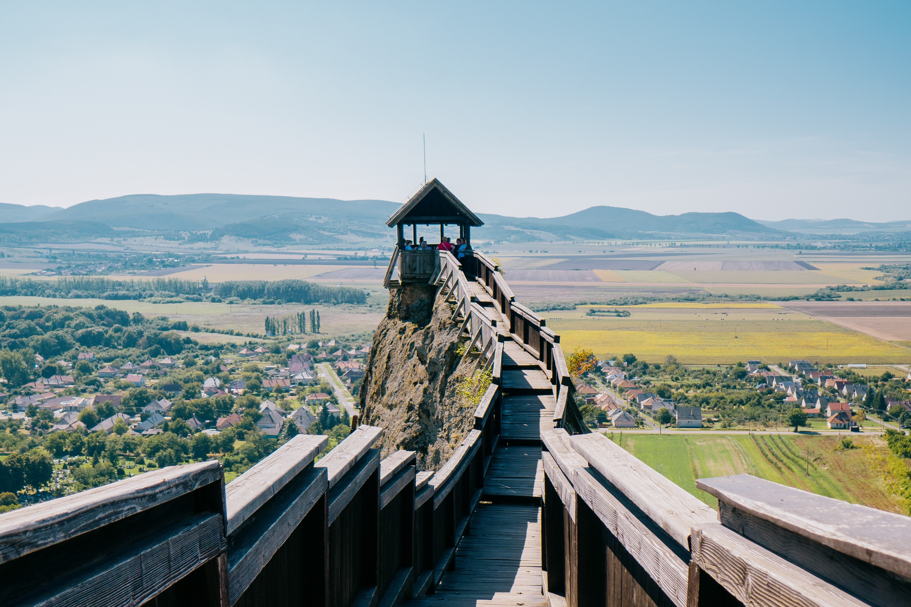

Boldogkővár
A Zempléni-hegység nyugati szélén, egy hihetetlenül meredek, szinte függőleges falú sziklagerincen magasodik Boldogkő vára, melynek várfokáról a Zempléni Tájvédelmi Körzet elképesztő látványa tárul eléd. Keletkezésének pontos idejéről nincsenek információk, azonban az biztos, hogy a tatárjárás utáni időkben kezdték építeni, hogy felügyelni tudják a Kassára vezető utat.
 A várba a félkör alaprajzú kapubástyán keresztül lehet bejutni, melynek bejáratához ma fahíd vezet, ennek helyén egykor felvonóhíd állt. A bástyán lőrések találhatók, kifelé és az udvarra néző nyílásai neogótikus keretezésűek. A régészeti feltárás során megállapították, hogy a bástya alapozása nagyjából 150 cm mély, illetve hogy udvari bejáratánál cölöplyukak találhatók, amelyek valószínűsíthetően a kapubástya építése előtti időből származó fa védmű, például palánkfal nyomai.
A várba a félkör alaprajzú kapubástyán keresztül lehet bejutni, melynek bejáratához ma fahíd vezet, ennek helyén egykor felvonóhíd állt. A bástyán lőrések találhatók, kifelé és az udvarra néző nyílásai neogótikus keretezésűek. A régészeti feltárás során megállapították, hogy a bástya alapozása nagyjából 150 cm mély, illetve hogy udvari bejáratánál cölöplyukak találhatók, amelyek valószínűsíthetően a kapubástya építése előtti időből származó fa védmű, például palánkfal nyomai.
 Az alsó udvar északi részén áll a csonka bástya, amelynek fala a nyugati külső fal folytatása. Az építmény a külső, pártázatos védőfalakkal és a kaputoronnyal együtt a 15. században épülhetett. A csonka bástya falán alul két ágyúlőrést tártak fel, felette gyilokjáróról megközelíthető, kifelé szűkülő lőrések és ablakok álltak. A bástyát délről a pincebejárat felett épített, 60 cm vastag, 140 cm magas fal határolta. A csonka bástya alatt négyágú pincét alakítottak ki, amelynek bejárata az alsó udvaron, a kapunyílás mellett található.
Az alsó udvar északi részén áll a csonka bástya, amelynek fala a nyugati külső fal folytatása. Az építmény a külső, pártázatos védőfalakkal és a kaputoronnyal együtt a 15. században épülhetett. A csonka bástya falán alul két ágyúlőrést tártak fel, felette gyilokjáróról megközelíthető, kifelé szűkülő lőrések és ablakok álltak. A bástyát délről a pincebejárat felett épített, 60 cm vastag, 140 cm magas fal határolta. A csonka bástya alatt négyágú pincét alakítottak ki, amelynek bejárata az alsó udvaron, a kapunyílás mellett található.
 A felsővárat az észak-déli irányban elnyúló hegygerinc tetején, az alsó udvar felett átlagosan 10–11 méterrel, attól keletre alakították ki. A felsővár az épületegyüttes korábban keletkezett része, melyet a felső udvar, a háromszögletű torony, az öregtorony és a palota alkot.
A felsővárat az észak-déli irányban elnyúló hegygerinc tetején, az alsó udvar felett átlagosan 10–11 méterrel, attól keletre alakították ki. A felsővár az épületegyüttes korábban keletkezett része, melyet a felső udvar, a háromszögletű torony, az öregtorony és a palota alkot.
 A vár legrégebbi része a 13. századi öregtorony. A vár legkorábbi szakaszában csak ez az épület állt, melyet lakótoronyként is alkalmaztak. A torony belmérete nagyjából 5,5×5,5 méteres, falvastagsága pedig néhol akár 2,80 méteres is lehet.
A vár legrégebbi része a 13. századi öregtorony. A vár legkorábbi szakaszában csak ez az épület állt, melyet lakótoronyként is alkalmaztak. A torony belmérete nagyjából 5,5×5,5 méteres, falvastagsága pedig néhol akár 2,80 méteres is lehet.
A felsővár legészakibb pontján található a palota és az azt észak felől védő, háromszög alapú hasáb formájú lakótorony. Mindkét épület a 14. század elején, tehát a vár korai szakaszában, de az öregtorony után keletkezett, amikor egy nagy átépítés során a korábbi elavult öregtornyos elrendezés helyett belsőtornyos erődítményt alakítottak ki.